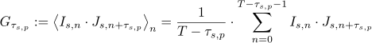
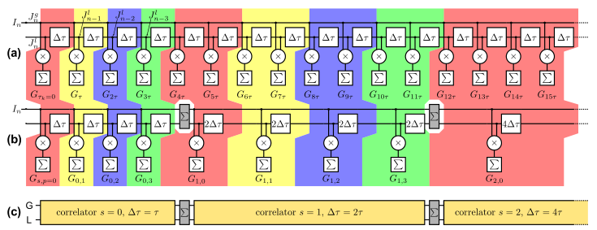
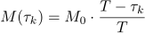

i.e. calculating the symmetrically normalized cross-correlation function between the signals I and J (for an autocorrelation we simply set J=I):
this corresponds to the continuum definition: $$bmath:g(\tau)=\frac{\langle I(t)\cdot J(t+\tau)\rangle}{\langle I\rangle\cdot\langle J\rangle} \text{with} \langle I(t)\rangle=\limi_{T\rightarrow\infty}\frac{1}{T}\int_0^T I(t)\;\mathrm{d}t$$ The correlation scheme used in this function was introduced by K. Schätzel [1,2] for hardware correlators. It allows to estimate the ACF/CCF without keeping the whole time series in memory. It is based on the above semi-logarithmically spaced values of τs,p. For each of the P linear blocks an averaged set of input signals is created:
Using this scheme, the estimate of the CCF can be written as above:
As can be seen only the averages intensities Is,n appear in the formula. This scheme can also be drawn as a schematic, which shows the direct connection to a simple hardware implementation [3]:
The Δτ blocks delay the input signal by Δτ, the ×-blocks multiply the two input signals and the Σ-blocks accumulate the input. The top row (a) shows a fully linear implementation (no logarithmic spacing) and (b)/(c) the multi-τ implementation. This plugin contains a software version of this scheme. Using this scheme introduces an additional (triangular) averaging into the ACF/CCF (as compared to the direct estimation), but allows to calculate it without the need to keep the whole image series in memory. Also this averaging depends on the linear block s and has only little impakt for small s. the systematic error introduced increases for the larger lags for which usually measured ACFs/CCFs already decayed to 0 [4]:
Here
 is a triangular kernel function and * denotes the convolution product.
is a triangular kernel function and * denotes the convolution product.
The "delayed monitor" M(τk) may be estimated in two ways. Either it is calculated for every lag τk separately, or it can bes estimated as:
from the zero-lag monitor M(0). This method possibly introduces additional errors that are but negligible for longer image series (see [3] for a detailed discussion).
In general the results of all correlation scheme are the same. Those with intrinsic averaging will decrease the noise on the correlation curve at larger lag times, where the statistics tends to get worse due to the fewer summands in the average. This is beneficial, when the correlation curves decay to zero/one in this regime, as then the estimation error is decreased. If the correlation curves do not decay, using a correlator with averaging will introduce an additional systematic error. This can be illustrated in these examples:
autocorrelation of a sine signal:

autocorrelation which decays to one for different decay times:In addition to these discussed errors there are other differences in the implementations: The direct correlators need the whole image series to reside in memory, so if your image series is very long (longer than ~1,000,000 frames and with many pixels) it is usually better to use the multi-τ correlators, as these are fed frame by frame, so only few frames reside in memory at every time. $$qf_commondoc_backtop$$

[1]: K. Schätzel (1985): New concepts in correlator design, Institute of Physics Conference Series 77, 175-184.
[2]: K. Schätzel (1990): Noise on photon correlation data: I. Autocorrelation functions, Quantum Opt. 2, 287-305
[3]: J. Buchholz, J.W. Krieger, etal (2011): FPGA implementation of a 32×32 autocorrelator array for analysis of fast image series, Optics Express, vol. 20, issue 16, p. 17767
[4]: Z. Kojro, A. Riede, M. Schubert and W. Grill (1999): Systematic and statistical errors in correlation estimators obtained from various digital correlators Review of Scientific Instruments 70, 4487-4496